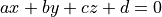
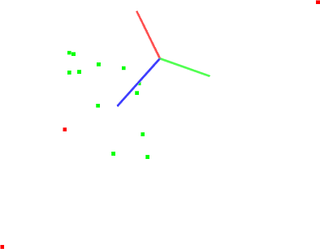

Plane model segmentation
In this tutorial we will learn how to do a simple plane segmentation of a set of points, that is to find all the points within a point cloud that support a plane model. This tutorial supports the Extracting indices from a PointCloud tutorial, presented in the filtering section.
The code
First, create a file, let’s say, planar_segmentation.cpp in your favorite
editor, and place the following inside it:
1 2 3 4 5 6 7 8 9 10 11 12 13 14 15 16 17 18 19 20 21 22 23 24 25 26 27 28 29 30 31 32 33 34 35 36 37 38 39 40 41 42 43 44 45 46 47 48 49 50 51 52 53 54 55 56 57 58 59 60 61 62 63 64 65 66 67 68 69 70 | #include <iostream>
#include <pcl/ModelCoefficients.h>
#include <pcl/io/pcd_io.h>
#include <pcl/point_types.h>
#include <pcl/sample_consensus/method_types.h>
#include <pcl/sample_consensus/model_types.h>
#include <pcl/segmentation/sac_segmentation.h>
int
main (int argc, char** argv)
{
pcl::PointCloud<pcl::PointXYZ>::Ptr cloud(new pcl::PointCloud<pcl::PointXYZ>);
// Fill in the cloud data
cloud->width = 15;
cloud->height = 1;
cloud->points.resize (cloud->width * cloud->height);
// Generate the data
for (std::size_t i = 0; i < cloud->points.size (); ++i)
{
cloud->points[i].x = 1024 * rand () / (RAND_MAX + 1.0f);
cloud->points[i].y = 1024 * rand () / (RAND_MAX + 1.0f);
cloud->points[i].z = 1.0;
}
// Set a few outliers
cloud->points[0].z = 2.0;
cloud->points[3].z = -2.0;
cloud->points[6].z = 4.0;
std::cerr << "Point cloud data: " << cloud->points.size () << " points" << std::endl;
for (std::size_t i = 0; i < cloud->points.size (); ++i)
std::cerr << " " << cloud->points[i].x << " "
<< cloud->points[i].y << " "
<< cloud->points[i].z << std::endl;
pcl::ModelCoefficients::Ptr coefficients (new pcl::ModelCoefficients);
pcl::PointIndices::Ptr inliers (new pcl::PointIndices);
// Create the segmentation object
pcl::SACSegmentation<pcl::PointXYZ> seg;
// Optional
seg.setOptimizeCoefficients (true);
// Mandatory
seg.setModelType (pcl::SACMODEL_PLANE);
seg.setMethodType (pcl::SAC_RANSAC);
seg.setDistanceThreshold (0.01);
seg.setInputCloud (cloud);
seg.segment (*inliers, *coefficients);
if (inliers->indices.size () == 0)
{
PCL_ERROR ("Could not estimate a planar model for the given dataset.");
return (-1);
}
std::cerr << "Model coefficients: " << coefficients->values[0] << " "
<< coefficients->values[1] << " "
<< coefficients->values[2] << " "
<< coefficients->values[3] << std::endl;
std::cerr << "Model inliers: " << inliers->indices.size () << std::endl;
for (std::size_t i = 0; i < inliers->indices.size (); ++i)
std::cerr << inliers->indices[i] << " " << cloud->points[inliers->indices[i]].x << " "
<< cloud->points[inliers->indices[i]].y << " "
<< cloud->points[inliers->indices[i]].z << std::endl;
return (0);
}
|
The explanation
Now, let’s break down the code piece by piece.
Lines:
#include <pcl/sample_consensus/method_types.h>
#include <pcl/sample_consensus/model_types.h>
#include <pcl/segmentation/sac_segmentation.h>
Important
Please visit http://docs.pointclouds.org/trunk/a02954.html for more information on various other implemented Sample Consensus models and robust estimators.
Lines:
// Fill in the cloud data
cloud->width = 15;
cloud->height = 1;
cloud->points.resize (cloud->width * cloud->height);
// Generate the data
for (std::size_t i = 0; i < cloud->points.size (); ++i)
{
cloud->points[i].x = 1024 * rand () / (RAND_MAX + 1.0f);
cloud->points[i].y = 1024 * rand () / (RAND_MAX + 1.0f);
cloud->points[i].z = 1.0;
}
// Set a few outliers
cloud->points[0].z = 2.0;
cloud->points[3].z = -2.0;
cloud->points[6].z = 4.0;
std::cerr << "Point cloud data: " << cloud->points.size () << " points" << std::endl;
for (std::size_t i = 0; i < cloud->points.size (); ++i)
std::cerr << " " << cloud->points[i].x << " "
<< cloud->points[i].y << " "
<< cloud->points[i].z << std::endl;
create the point cloud structure, fill in the respective values, and display the content on screen. Note that for the purpose of this tutorial, we manually added a few outliers in the data, by setting their z values different from 0.
Then, lines:
pcl::ModelCoefficients::Ptr coefficients (new pcl::ModelCoefficients);
pcl::PointIndices::Ptr inliers (new pcl::PointIndices);
// Create the segmentation object
pcl::SACSegmentation<pcl::PointXYZ> seg;
// Optional
seg.setOptimizeCoefficients (true);
// Mandatory
seg.setModelType (pcl::SACMODEL_PLANE);
seg.setMethodType (pcl::SAC_RANSAC);
seg.setDistanceThreshold (0.01);
seg.setInputCloud (cloud);
seg.segment (*inliers, *coefficients);
create the :pcl:`SACSegmentation <pcl::SACSegmentation>` object and set the model and method type. This is also where we specify the “distance threshold”, which determines how close a point must be to the model in order to be considered an inlier. In this tutorial, we will use the RANSAC method (pcl::SAC_RANSAC) as the robust estimator of choice. Our decision is motivated by RANSAC’s simplicity (other robust estimators use it as a base and add additional, more complicated concepts). For more information about RANSAC, check its Wikipedia page.
Finally:
std::cerr << "Model coefficients: " << coefficients->values[0] << " "
<< coefficients->values[1] << " "
<< coefficients->values[2] << " "
<< coefficients->values[3] << std::endl;
are used to show the contents of the inlier set, together with the estimated plane parameters (in  form).
Compiling and running the program
Add the following lines to your CMakeLists.txt file:
1 2 3 4 5 6 7 8 9 10 11 12 | cmake_minimum_required(VERSION 2.8 FATAL_ERROR)
project(planar_segmentation)
find_package(PCL 1.2 REQUIRED)
include_directories(${PCL_INCLUDE_DIRS})
link_directories(${PCL_LIBRARY_DIRS})
add_definitions(${PCL_DEFINITIONS})
add_executable (planar_segmentation planar_segmentation.cpp)
target_link_libraries (planar_segmentation ${PCL_LIBRARIES})
|
After you have made the executable, you can run it. Simply do:
$ ./planar_segmentation
You will see something similar to:
Point cloud data: 15 points
0.352222 -0.151883 2
-0.106395 -0.397406 1
-0.473106 0.292602 1
-0.731898 0.667105 -2
0.441304 -0.734766 1
0.854581 -0.0361733 1
-0.4607 -0.277468 4
-0.916762 0.183749 1
0.968809 0.512055 1
-0.998983 -0.463871 1
0.691785 0.716053 1
0.525135 -0.523004 1
0.439387 0.56706 1
0.905417 -0.579787 1
0.898706 -0.504929 1
[pcl::SACSegmentation::initSAC] Setting the maximum number of iterations to 50
Model coefficients: 0 0 1 -1
Model inliers: 12
1 -0.106395 -0.397406 1
2 -0.473106 0.292602 1
4 0.441304 -0.734766 1
5 0.854581 -0.0361733 1
7 -0.916762 0.183749 1
8 0.968809 0.512055 1
9 -0.998983 -0.463871 1
10 0.691785 0.716053 1
11 0.525135 -0.523004 1
12 0.439387 0.56706 1
13 0.905417 -0.579787 1
14 0.898706 -0.504929 1
A graphical display of the segmentation process is shown below.
Note that the coordinate axes are represented as red (x), green (y), and blue (z). The points are represented with red as the outliers, and green as the inliers of the plane model found.